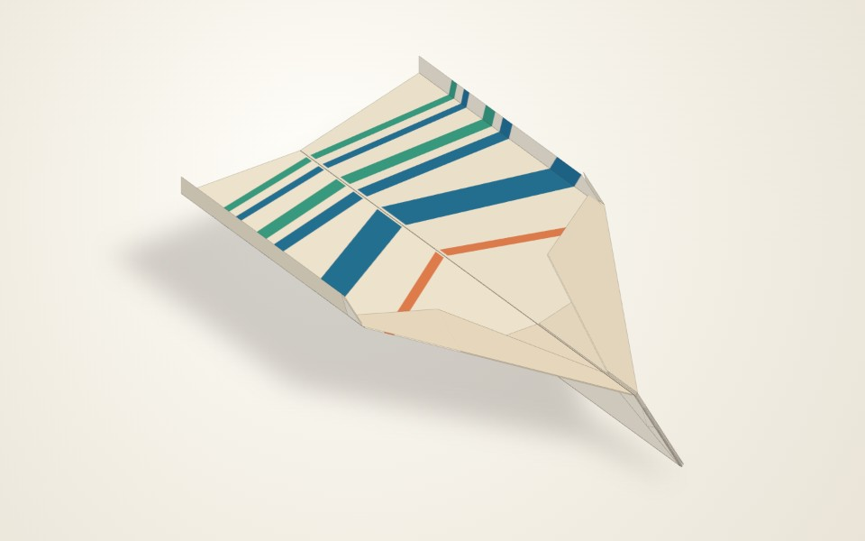

Cometa delta
Tupolev Tu-144
Dos dobleces diagonales · ala delta estrecha. Los pliegues en flecha distribuyen la superficie del ala de otra forma a lo largo del cuerpo. Las fuerzas del aire por delante o por detrás del punto de equilibrio pueden hacer girar el morro. Compara con el DC-3 desde la misma altura.
- Profundidad del pliegue del fuselaje
- 18 mm
- Pliegue de la punta
- 4 mm

Qué necesitas
Una hoja rectangular y una regla. Puedes usar papel sin imprimir.
Imprime la plantilla
Imprime al 100 % (Tamaño real) y comprueba con una regla que la escala del papel mide 50 mm.
Prueba este experimento
Dobla un Cometa delta y un Planeador de la pradera con el mismo papel. Lanza cada modelo cinco veces suavemente desde el mismo sitio. Compara dónde toca por primera vez el suelo cada uno.
Ala delta alargada
Sigue el borde largo del ala triangular desde la punta hacia atrás.
Busca el contorno triangular y las franjas en ángulo que lo acompañan.
Ver los otros modelos
-

Boeing 747
Plegar una hoja entera
-

Douglas DC-3
Plegar una hoja entera
-

Ilyushin Il-62
Plegar una hoja entera